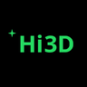
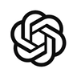
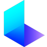
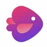

Every service this studio offers can be AI-powered. Not one
of them has to be. The work begins where it always began — in editing software
for a cut, behind a camera, at a pencil, on a mixing desk — and the tools arrive
afterwards, at the points where they genuinely earn their place.
How far that goes is the client’s call rather than a default set on their
behalf. Some briefs want everything the tooling can give them; others want a camera,
a pair of hands and nothing else. Both are on the menu, at the same standard.
“We use AI” has stopped meaning anything on its own, so what follows is
the specific version: what it adds, who stays in charge of it, and exactly where it
enters the work.
What AI changes
Four things, concretely. Speed: the passes that used to eat a
schedule — cleaning up audio, culling a shoot, cutting variants, working through
footage frame by frame — come back in a fraction of the time, which leaves more
of the budget sitting where it belongs, on the decisions. Range: an
idea can be tested at a volume nobody could reach by hand, so what ships is chosen out
of many rather than settled for. Scope: a brief that would once have
been turned down for want of a whole department can be taken on.
Cost: the overhead of that department is not in the quote, because
the department is not there. None of it is a discount on quality. It is the removal of
a cost that was never doing the client any good.
Human in the loop
Nothing here runs unattended. There is no button that takes a brief in one end and
pushes a finished piece out of the other, and a studio claiming otherwise is
describing a demo rather than a delivery.
What a tool returns is raw material — a take, a pass, a variant, a hundred
versions of a thing — and a person decides which of it survives, where it sits,
what gets rebuilt by hand around it, and when the piece is finished. The assembly is
human from the first decision to the last. A tool cannot tell you which of its hundred
versions is right, because it has no stake in the answer. That judgement is the part
being hired.
How AI is used
In the order that matters: the traditional way first. A cut is assembled on a real
timeline in editing software. A model is built in a 3D package. A track is arranged
and mixed in a DAW. A drawing is drawn. That project — properly structured, in
the same formats it would always have used — is the thing that actually
exists.
The tools are then brought to bear on it wherever the piece benefits: upscaling
footage the camera could not give, generating the variants nobody has the hours to
draw, separating stems, cleaning plates, carrying the repetitive passes that used to
be paid for by the hour. They enter as tooling inside all seventeen disciplines rather
than as a service standing beside them. What that range covers is in
What we do — and exactly where the tools enter
each discipline, and what they are kept out of, is below.
Where it enters the work
Rather than take the claim on trust, here is the whole of it. The tools are chosen
per brief, and most of what runs here is already paid for.
Where a job needs generation at commercial scale, the credits and licences bought
for that brief are quoted before the work starts and passed on at cost — never
marked up, and never a surprise on the invoice. If a piece can be delivered on what
this studio already runs, there is nothing extra to charge.
Each pipeline below runs in three kinds of stage: the
craft, where the project is built the way it always was; the tools, brought to bear
on it only where they earn it; and the call, where a person decides what survives,
what gets rebuilt by hand, and when the thing is finished.
Design & identity
Logo design
The craft — a timeline, a camera, a pencil, a mixing desk. The project is built the way it always was.Sketch
The tools — brought to bear on that project only where they earn it.Generate
The craft — a timeline, a camera, a pencil, a mixing desk. The project is built the way it always was.Vector
The call — what survives, what gets rebuilt by hand, and when the thing is finished.Sign-off
Graphic design
The craft — a timeline, a camera, a pencil, a mixing desk. The project is built the way it always was.Layout
The tools — brought to bear on that project only where they earn it.Generate
The craft — a timeline, a camera, a pencil, a mixing desk. The project is built the way it always was.Artwork
The call — what survives, what gets rebuilt by hand, and when the thing is finished.Sign-off
Illustration
The craft — a timeline, a camera, a pencil, a mixing desk. The project is built the way it always was.Drawn
The craft — a timeline, a camera, a pencil, a mixing desk. The project is built the way it always was.Scan
The tools — brought to bear on that project only where they earn it.Models
The tools — brought to bear on that project only where they earn it.Colour
The call — what survives, what gets rebuilt by hand, and when the thing is finished.Sign-off
Print & apparel
The craft — a timeline, a camera, a pencil, a mixing desk. The project is built the way it always was.Artwork
The tools — brought to bear on that project only where they earn it.Generate
The craft — a timeline, a camera, a pencil, a mixing desk. The project is built the way it always was.Separation
The call — what survives, what gets rebuilt by hand, and when the thing is finished.Proof
3D & interactive
3D modelling
The craft — a timeline, a camera, a pencil, a mixing desk. The project is built the way it always was.Block out
The tools — brought to bear on that project only where they earn it.

Image to 3D
The craft — a timeline, a camera, a pencil, a mixing desk. The project is built the way it always was.Retopo
The call — what survives, what gets rebuilt by hand, and when the thing is finished.Look dev
Game development
The craft — a timeline, a camera, a pencil, a mixing desk. The project is built the way it always was.Design
The tools — brought to bear on that project only where they earn it.

Code
The craft — a timeline, a camera, a pencil, a mixing desk. The project is built the way it always was.Build
The call — what survives, what gets rebuilt by hand, and when the thing is finished.Playtest
Software prototyping
The craft — a timeline, a camera, a pencil, a mixing desk. The project is built the way it always was.Spec
The tools — brought to bear on that project only where they earn it.Code
The craft — a timeline, a camera, a pencil, a mixing desk. The project is built the way it always was.Build
The call — what survives, what gets rebuilt by hand, and when the thing is finished.Review
Film & photography
Videography
The craft — a timeline, a camera, a pencil, a mixing desk. The project is built the way it always was.Plan
The tools — brought to bear on that project only where they earn it.

Previs
The craft — a timeline, a camera, a pencil, a mixing desk. The project is built the way it always was.Shoot
The call — what survives, what gets rebuilt by hand, and when the thing is finished.Review
Video editing
The craft — a timeline, a camera, a pencil, a mixing desk. The project is built the way it always was.Rushes
The craft — a timeline, a camera, a pencil, a mixing desk. The project is built the way it always was.Assembly
The tools — brought to bear on that project only where they earn it.Enhance
The tools — brought to bear on that project only where they earn it.Music & SFX
The call — what survives, what gets rebuilt by hand, and when the thing is finished.Final cut
Animation
The craft — a timeline, a camera, a pencil, a mixing desk. The project is built the way it always was.Keys
The tools — brought to bear on that project only where they earn it.Motion
The craft — a timeline, a camera, a pencil, a mixing desk. The project is built the way it always was.Timing
The call — what survives, what gets rebuilt by hand, and when the thing is finished.Sign-off
Photography
The craft — a timeline, a camera, a pencil, a mixing desk. The project is built the way it always was.Shoot
The craft — a timeline, a camera, a pencil, a mixing desk. The project is built the way it always was.Cull
The tools — brought to bear on that project only where they earn it.Enhance
The craft — a timeline, a camera, a pencil, a mixing desk. The project is built the way it always was.Retouch
The call — what survives, what gets rebuilt by hand, and when the thing is finished.Sign-off
Sound
Music production
The craft — a timeline, a camera, a pencil, a mixing desk. The project is built the way it always was.Written
The tools — brought to bear on that project only where they earn it.Sketch ideas
The craft — a timeline, a camera, a pencil, a mixing desk. The project is built the way it always was.Arrange & mix
The call — what survives, what gets rebuilt by hand, and when the thing is finished.Master
Sound design
The craft — a timeline, a camera, a pencil, a mixing desk. The project is built the way it always was.Record
The tools — brought to bear on that project only where they earn it.Library
The tools — brought to bear on that project only where they earn it.Generate
The craft — a timeline, a camera, a pencil, a mixing desk. The project is built the way it always was.Edit
The call — what survives, what gets rebuilt by hand, and when the thing is finished.Sign-off
Digital
Web design
The craft — a timeline, a camera, a pencil, a mixing desk. The project is built the way it always was.Structure
The tools — brought to bear on that project only where they earn it.Code
The craft — a timeline, a camera, a pencil, a mixing desk. The project is built the way it always was.Build
The call — what survives, what gets rebuilt by hand, and when the thing is finished.Ship
Digital publishing
The craft — a timeline, a camera, a pencil, a mixing desk. The project is built the way it always was.Manuscript
The tools — brought to bear on that project only where they earn it.Copy
The tools — brought to bear on that project only where they earn it.Convert
The craft — a timeline, a camera, a pencil, a mixing desk. The project is built the way it always was.Layout
The call — what survives, what gets rebuilt by hand, and when the thing is finished.Proof
Social media management
The craft — a timeline, a camera, a pencil, a mixing desk. The project is built the way it always was.Calendar
The tools — brought to bear on that project only where they earn it.

Make
The tools — brought to bear on that project only where they earn it.Automate
The craft — a timeline, a camera, a pencil, a mixing desk. The project is built the way it always was.Schedule
The call — what survives, what gets rebuilt by hand, and when the thing is finished.Post
AI workflows
The craft — a timeline, a camera, a pencil, a mixing desk. The project is built the way it always was.Map
The tools — brought to bear on that project only where they earn it.Models
The tools — brought to bear on that project only where they earn it.Run
The tools — brought to bear on that project only where they earn it.Orchestrate
The call — what survives, what gets rebuilt by hand, and when the thing is finished.Monitor
How your work is handled
A model trained on everything tends toward the average of everything, and that average is precisely what you would be paying not to receive. It is a starting point to be overridden, never an output to be shipped.Not generic
Every right held in the delivered work transfers to you, and portfolio use is asked for rather than assumed. Purely machine-generated material may carry no copyright at all in some jurisdictions — a further reason the work here is directed and reworked by hand.You own it
What you send is used to do your job and for nothing else. Anything confidential stays out of third-party tools entirely, and nothing you provide trains a model.Kept private
A person, not a process. “The tool produced that” has never been an explanation for anything.One name on it
Or commission the capability on its own
Pipelines built around how your operation actually runs, rather than around how a tool prefers to be used.Workflows
The repetitive half of a process, handed to something that will not get bored and start making mistakes at four in the afternoon.Automation
Images, audio, video, copy and 3D produced to a brief, at a volume that would not otherwise be affordable.Generation
Working out where this helps and, more usefully, where it does not.Consultation
If you are not sure which of those you need, working that out is part of the job.
Get in touch.